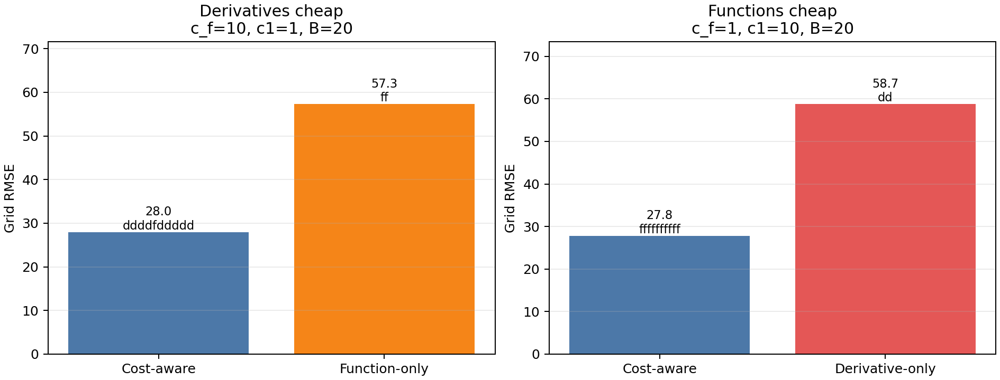

Budgeted Cost-Aware Policy Comparison#
Overview#
This example checks whether the cost-aware active-learning policy responds sensibly to the relative cost of function and derivative observations. The idea is to compare the policy against deliberately restricted baselines under the same budget:
when derivatives are cheap, compare against a function-only policy,
when function values are cheap, compare against a derivative-only policy.
All runs use the same Branin-Hoo function, initial design, GP fitting code, test grid, optimizer settings, and budget accounting. The only difference is which candidate types each policy is allowed to select.
—
Baseline Policies#
The baselines are intentionally simple. They subclass AdaptiveDirectionalGP
and filter the candidate set before the best candidate is chosen.
class CandidateFilteredAdaptiveGP(AdaptiveDirectionalGP):
allowed_kind = None
def _build_cost_aware_candidates(self):
candidates = super()._build_cost_aware_candidates()
if self.allowed_kind is None:
return candidates
return [c for c in candidates if c.kind == self.allowed_kind]
class FunctionOnlyAdaptiveGP(CandidateFilteredAdaptiveGP):
allowed_kind = "f"
class DerivativeOnlyAdaptiveGP(CandidateFilteredAdaptiveGP):
allowed_kind = "d"
This is useful because the baselines still use the same GP implementation and cost-budget logic as the cost-aware policy. The comparison isolates the candidate-selection decision rather than comparing against a separate code path.
—
Experiment 1: Derivatives Are Cheap#
In the first regime, a function value costs 10 times as much as a first-order directional derivative:
c_f = 10c1 = 1budget
B = 10
The function-only baseline can afford one new function value. The cost-aware policy can instead spend the same budget on multiple derivative observations at existing sites.
—
Experiment 2: Function Values Are Cheap#
In the second regime, the cost relationship is reversed:
c_f = 1c1 = 10budget
B = 4
The derivative-only baseline cannot afford a derivative observation. The cost-aware policy should instead spend the budget on additional function evaluations.
—
Results#
The figure shows grid RMSE for each policy in the two cost regimes. The text
above each bar gives the selected observation sequence: f for a function
evaluation and d for a derivative observation.
{kind=link}

The generated run produced the following table:
Regime |
Policy |
Selected observations |
Cost used |
Grid RMSE |
|---|---|---|---|---|
Derivatives cheap (c_f=10, c1=1, B=10) |
Cost-aware |
|
10.0 |
24.14 |
Derivatives cheap (c_f=10, c1=1, B=10) |
Function-only |
|
10.0 |
63.73 |
Functions cheap (c_f=1, c1=10, B=4) |
Cost-aware |
|
4.0 |
55.56 |
Functions cheap (c_f=1, c1=10, B=4) |
Derivative-only |
|
0.0 |
60.14 |
Interpretation#
The cost-aware policy changes behavior when the cost model changes:
when derivatives are cheap, it selects derivative observations and beats the function-only budget baseline;
when derivatives are too expensive, it selects function observations and beats the derivative-only baseline.
This is not intended to prove global optimality. It is a regression-style sanity check that the implementation uses the cost model in a useful way.
Reproducing the Figure#
Run:
python docs/source/JetGP_module_examples/active_learning_cost_comparison.py
The script writes:
docs/source/_static/active_learning_cost_comparison.png
The same comparison is also covered by the active-learning test suite in
active_learning/tests/test_cost_aware_value.py.